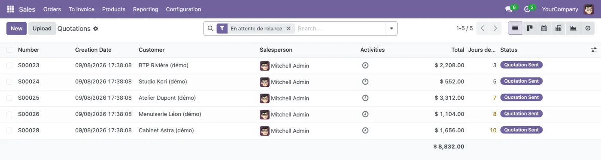

Antananarivo — Madagascar Télétravail international
Vos flux métier tournent déjà. Je fais en sorte qu'ils tournent seuls.
Pipelines d'automatisation et systèmes IA branchés sur de vrais outils d'entreprise : extraction documentaire, agents qui agissent réellement, workflows qui relient Odoo, CRM et API tierces.
L'automatisation intégrée d'Odoo s'arrête à ses propres frontières. Une commande validée, un mouvement de stock, un nouveau contact : rien de tout ça ne peut déclencher un workflow externe sans un pont qui tienne en production.
Solution
Un module Odoo 17 qui expose les événements métier (commande confirmée, livraison validée, facture comptabilisée) sous forme de webhooks signés HMAC-SHA256, mis en file d'attente et renvoyés jusqu'à 5 fois en cas d'échec. En retour, n8n écrit dans Odoo par un point d'entrée unique protégé par clé API.
Résultat
Une seule configuration pour relier Odoo à n'importe quel moteur d'automatisation, au lieu d'un connecteur bricolé par workflow. Démo écrite de zéro, sans code client, installée et testée sur Odoo 17.
Stack
Odoo 17Pythonn8nHMAC-SHA256REST APIPostgreSQL
Contraintes
Rester dans l'ORM et le modèle de droits d'Odoo : chaque appel entrant s'exécute sous l'utilisateur lié à la clé, et seuls les modèles, méthodes et champs d'une liste blanche sont accessibles. L'envoi passe par un cron, pour qu'un n8n lent ou arrêté ne bloque jamais une vente.
Lire un profil, repérer une accroche pertinente et écrire un message qui ne sonne pas générique prend 10 à 15 minutes par prospect.
Solution
Un workflow n8n qui reçoit le texte d'un profil et la niche visée (marketing ou Odoo), puis produit via un LLM à sortie JSON imposée un résumé, trois douleurs probables, une accroche et trois messages : court (280 caractères max), standard et premium. Chaque résultat est enregistré dans une Data Table n8n, Google Sheets et Notion.
Résultat
3 messages prêts à envoyer par profil, en trois longueurs. La préparation passe d'environ 10 minutes à moins de 30 secondes.
Limites
L'agent ne récupère pas le profil lui-même : à cause des protections anti-scraping de LinkedIn, on lui colle le texte du profil (ou un export Sales Navigator). Pas encore de mode par lots ni de gestion d'erreurs explicite.
Un devis envoyé sans réponse finit souvent oublié : personne ne sait lequel relancer, quand, ni sur quel ton, et tout dépend de la mémoire du commercial.
Solution
Un module Odoo 18 avec un cron quotidien qui relance les devis restés sans réponse à J+3, J+7 et J+14, sur un ton de plus en plus ferme, par email, par activité assignée ou les deux. Un devis auquel le client a répondu est exclu automatiquement.
Résultat
Chaque relance est horodatée sur le devis (onglet Relances), un filtre montre ce qui attend, et le moteur fait un nombre fixe de requêtes quel que soit le nombre de devis (pas de N+1).

Stack
Odoo 18PythonORMCronmail.templateVues XML
Contraintes
Délais, canal et responsable réglables dans les paramètres Ventes. Bouton « Relancer maintenant » et case « Ne pas relancer ». 10 devis de démonstration couvrent tous les cas.
Trois types de systèmes que je construis, tous pensés pour se brancher sur les outils existants d'une entreprise (ERP, CRM, API tierces). Les exemples ci-dessus sont des projets publics que vous pouvez ouvrir.
01 · Documents
Traitement documentaire
Ce que je peux construire : extraire les données de factures, contrats ou PDF et les injecter dans votre ERP ou votre base de données, à la place d'une ressaisie manuelle.
02 · Agents
Agents autonomes
Des agents LLM qui appellent de vraies API et écrivent en base plutôt que de répondre à des questions. L'agent de prospection LinkedIn en est un exemple.
Workflows événementiels reliant ERP, CRM et services tiers, avec webhooks signés et tâches planifiées. n8n-bridge et le module de relances de devis en sont les exemples ci-dessus.
Agents n8n + LLM, modules Odoo et passerelles d'intégration publiés en open source.
Avril 2024 — juin 2026Développeur fullstack OdooMTechniix — Madagascar, hybride
61 projets livrés en production sur Odoo 12 à 19 : achats, ventes, stocks, facturation, CRM, modules métiers sur mesure, dont des clients restés sur d'anciennes versions non migrées.
Deux ans de livraisons Odoo en production m'ont appris à prévoir la file d'attente, la reprise sur erreur et les droits d'accès dès la démo, pas après.
Des métriques réelles
Les chiffres affichés viennent d'un poste identifiable ou d'un dépôt qu'on peut ouvrir, jamais d'une estimation flatteuse.
Intégration opérationnelle
Les systèmes se branchent sur de vrais outils (Odoo, PostgreSQL, Notion, Google Sheets, API d'IA), pas sur des bouchons de démonstration.
Code clair & auditable
Dépôts publics, modules documentés. On peut lire comment ça marche, et pourquoi chaque décision a été prise ainsi.
Prochaine étape
On regarde votre flux le plus lent ?
Disponible pour des missions freelance, des projets d'automatisation sur mesure et des postes en CDI. Basé à Antananarivo, ouvert au télétravail international ou à une relocalisation en Europe.